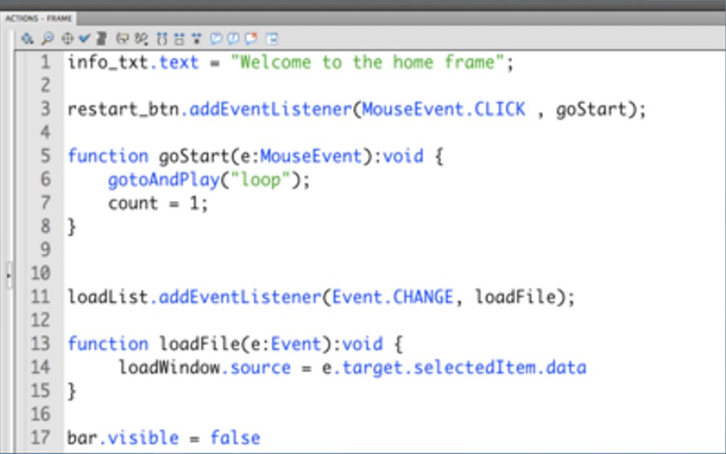

Adobe Flash (ყოფილი Macromedia Flash) — მულტიმედიური პლატფორმა, რომელიც გამოიყენება რეკლამებისათვის, თამაშებისათვის და Flash-ანიმაციისათვის. უკანასკნელ პერიოდში დაიწყო მისი გამოყენება ინტერნეტ-დამატებებისათვის (RIA).
Flash მანიპულირებას უკეთებს ვექტორულ და რასტრულ გრაფიკას და უზრუნველყოფს აუდიოსა და ვიდეოს ორმხრივ დინებას. ის შეიცავს სკრიფტინგის ენას, რომელსაც ActionScript ქვია. გამოიყენება თითქმის ყველა მთავარ ბრაუზერში, ზოგიერთ ტელეფონსა და ელექტრონულ მოწყობილობაში. რამდენიმე პროგრამას, სისტემას და მოწყობილობას, რომელიც შეიცავს Adobe Flash Player-ს, აქვს საშუალება გამოსახოს Flash.ავტომატური მოქმედების უზრუნველყოფა ასევე ხდება JavaScript Flash ენით (JSFL). აქვს კომპიუტერული აქსესუარების, მაუსის, კლავიატურის, მიკროფონისა თუ კამერის მხარდაჭერა.
SWF ფორმატის ფაილებს, რომელებსაც ტრადიციულად ეძახიან ფლეშ ფილმებს(Flash Movies), ან ფლეშ თამაშებს (Flash Games), აქვთ .swf ფაილური გაფართოება და შესაძლოა ისინი გამოყენებულ იქნან ვებ კომპონენტებად. Flash Video (FLV) ფაილებს აქვთ .flv ფაილური გაფართოება.